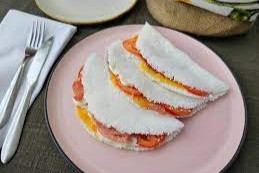

Home
Tapioca

Brazilian crepe-like pancakes made with tapioca flour!
Ingredients
Original recipe yelds 2-4 servings
- 1 cup tapioca starch, more as needed
- 1/2 cup water, approximately
- 1/4 teaspoon salt
Steps
- Gather all the ingredients.
- Add the tapioca starch to a medium bowl.
-
Gradually add the water, 2 tablespoons at a time, stirring with your
fingers as you go.
-
The mixture will form clumps; use your finger to break them apart.
-
Keep stirring and adding water until the entire mixture has formed
medium-to-small clumps.
-
If your mixture is too moist, add a little more starch until you find a
good balance.
-
Pass the moistened starch through a very fine sieve into a clean bowl.
-
Use a wooden spoon to vigorously stir the starch in the sieve to help it
pass through.
- Once sieved, add the salt, and stir again.
- Heat a nonstick pan over medium heat.
-
Working quickly, evenly sprinkle the sifted starch into a thin layer
until all the pan is covered.
-
Using the back of a spoon, even out the crepe and cook it for about 30
seconds.
-
Flip the crepe over with a spatula. Cook for an additional 30 to 40
seconds.
-
Pass crepe to a plate. Repeat process until you've used all the mixture.
-
Fill the tapioca with butter, if you like, or any fillings of your
choice.
- Serve and enjoy!